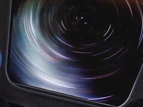
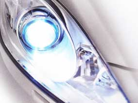
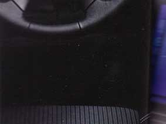
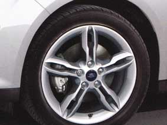
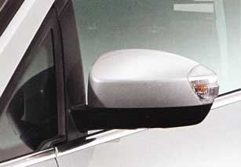

FORD
C-MAX
+ FORD
GRAND C-MAX
Home
Choose your Ford C-MAX
Zetec
Titanium
Titanium X
Colour
Trim
Contacts
Titanium X.
For the ultimate in comfort and new technology, look no further that Ford C-MAX/Grand C-MAX Titanium X.
Panorama roof
Bi-xenon headlights
Partial leather seats
(Standard)
(Standard
(Standard)



SYNC with Emergency Assistance*
17" 5x2-spoke alloy wheels
Power-foldable door mirrors
(Standard)
(Standard)
(Standard on Grand C-MAX)

